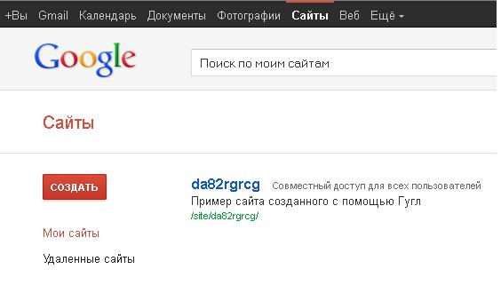
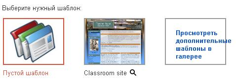
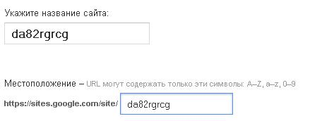
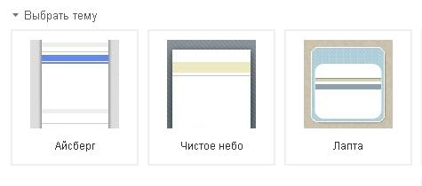
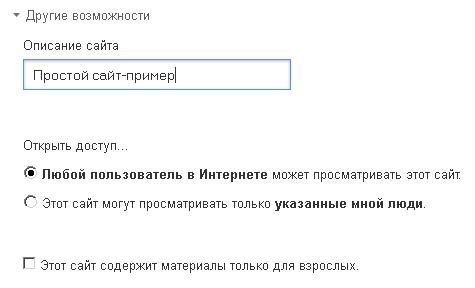
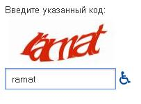
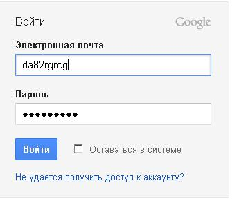

Лекція 2
Дана лекція присвячена основам створеня веб-сайтів за допомогою сервісу Google Sites, а також огляду перваг та недоліків цього сервісу.
Перш ніж перейти до безпосереднього створення веб-сайту необхідно зрозуміти які саме можливості надає Google.
Плюси викоритсання сервісу:
- Швидке створення сторінки.
- відсутність необхідності знання мови розмітки HTML.
- Можливість зміни вигляду і функцій.
- Можливість установки доступу та спільного використання інформації.
- Безкоштовне використання сервісу.
- Відсутність плати за доменне ім’я і хостинг.
- Відсутність рекламних банерів.
Додаткові можливості сайтів Google при роботі з Професійним пакетом Служб Google:
- 10 Гб пам'яті в Сайтах Google і 500 Мб на кожен аккаунт користувача Професійного пакета.
- Керування Сайтами Google, використовуючи спільний доступ до налаштувань для всієї організації.
- Легке і швидке публікування сайтів Google в межах своєї організації.
У Професійний пакет Служб Google входять:
- Gmail: 25 Гб для зберігання електронної пошти на кожен аккаунт і ефективна фільтрація спаму.
- Календар Google: календарі з можливістю спільного доступу.
- Документи Google: зміна документів декількома користувачами в режимі реального часу.
- Google Talk: безкоштовні голосові виклики та обмін текстовими повідомленнями.
До мінусів можна віднести:
- Обсяг дискового простору - до 100 Мб для зберігання інформації на сайті і 10 Гб на кожен домен для зберігання інформації при використанні Google Служб.
- Не підтримуються CSS і JavaScript.
- Доменне ім'я сайту має вигляд sites.google.com / site_name.
- Обмежені налаштування оформлення сайтів - змінюються тільки кольори, розміри і стиль шрифтів.
- Заборонені анонімні коментарі, змінювати зміст (у тому числі додавати коментарі) можуть тільки авторизовані користувачі.
- Немає стрічки RSS з оновленнями сайту.
- Відсутність класичногофайл-менеджеру і доступу по FTP.
Створення сайту:
Створити сайт за допомогою Сайтів Google дуже просто, незалежно від того, вирішите ви створити власний сайт або побудувати його на основі шаблону. Для початку увійдіть у свій акаунт http://sites.google.com, а потім натисніть "Створити новий сайт".
Висновки:
В данному розділі були розглянуті основні плюси та мнуси створення сайтів за допомогою сервісу Google, а також описані необхідні кроки для створення особистого сайту.

Налаштування сайту:
Вибираючи параметри створення сайту, не забувайте, що ви зможете змінити настройки сайту після його створення.
Шаблони:
Сайти Google мають безліч шаблонів сайту, які можна використовувати для швидкого створення основи нового сайту. Шаблон сайту містить готові сторінки. Їх оформлення, структура і зміст підходять для конкретної мети. (Додаткові відомості про кожного шаблоні можна отримати, навівши покажчик миші на значок спливаюча підказка.) При використанні шаблону можна буде змінити оформленні, структуру і зміст на свій розсуд. Деякі загальні шаблони наводяться на сторінці створення сайту. Ви також можете натиснути на посилання Переглянути додаткові шаблони в галереї, щоб переглянути додаткові шаблони.

Назва сайту:
Вибравши макет сайту, необхідно назвати сайт. Це ім'я буде перетворено в URL за замовчуванням для цього сайту. Якщо необхідно задати інший URL на основі імені сайту, змініть URL (використовуючи тільки буквено-цифрові символи) в поле з назвою Ваш сайт буде розміщено за наступним URL.

Тема сайту:
Тема сайту задає узгоджений зовнішній вигляд всіх сторінок сайту, тобто визначать такі параметри, як заголовок або колірні схеми меню.

Опис сайту:
У розділі Додаткові параметри можна вказати опис сайту, що дозволить коротко визначити призначення сайту.
Установки спільного доступу:
Крім того, в розділі Додаткові параметри можна вказати, хто зможе переглядати цей сайт. Щоб зробити сайт загальнодоступним, виберіть пункт "Цей сайт може переглядати будь-який користувач". Щоб зробити сайт закритим, виберіть пункт "Лише з вибраними мною користувачами". Якщо ви вирішили, що сайт буде закритим, необхідно вказати користувачів, яким буде дозволено доступ.
Зміст тільки для дорослих
Якщо сайт міститиме матеріали, призначені тільки для дорослих, натисніть кнопку поряд з пунктом Зміст цього сайту призначений тільки для дорослих.

Запуск нового сайту
Щоб завершити створення сайту, у відповідному полі введіть код підтвердження (це необхідно для захисту від роботів) і натисніть "Створити сайт". Тепер все готово до налаштування оформлення сайту, редагування сторінок і, найголовніше, отримання задоволення від існування вашого нового сайту!

Зміст, створюване з допомогою Сайтів Google, може за вашим вибором бути доступно для читання, копіювання, використання та надсилання іншим користувачам. Будьте уважні при розміщенні конфіденційних особистих відомостей на Сайті Google, включаючи номера соціального страхування, номери банківських рахунків, домашні адреси і номери телефонів.
